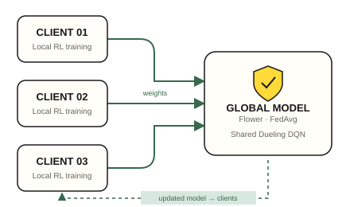

Privacy-Preserving Federated and Reinforcement Learning-Based Intrusion Detection System for IoT Devices
A research system that brings supervised detection, reinforcement learning, and collaborative model training into one workflow. Clients keep raw network-flow data locally and exchange model weights with a federated server.

The problem
IoT intrusion detection needs to identify attacks from network traffic. Centralizing every client's raw traffic creates a data-sharing constraint. This project explores collaborative training while keeping those raw flows at the clients.
Local learning → federated learning
A Dueling DQN agent is trained locally before Flower aggregates model weights across three clients with FedAvg. Clients receive the updated global model for subsequent local training.
The implemented agent uses one-step, class-weighted feedback on independent network flows to learn attack-class decisions.
Three views of a prediction
XGBoost provides the main supervised attack prediction. The Flask dashboard also presents the local RL agent's decision and the federated global model's decision side by side.
Preprocessing artifacts and saved model checkpoints connect notebook training to the inference interface.
Training you can inspect
The local dashboard reads federated status files, training rounds, and client heartbeats. Separate server and client processes make it possible to inspect training activity alongside the saved global model.
The privacy approach keeps raw flows local; the federated exchange consists of model weights.